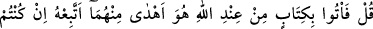

inkâr etmemişler miydi?” Sonra Allah Teâlâ onların küfürlerinin keyfiyetini beyanla
buyuruyor ki: “Birbirini destekleyen,” biri diğerini tasdik eden “iki sihir!”
demişler…”
Onların böyle söylemelerinin sebebi şuydu: Mekkeliler, bir bayram gününde
yahûdilere bir heyet gönderdiler ve Peygamber (s.a)’in durumunu sordular. Yahûdiler
de “Biz Tevrât’ta bütün vasıflarıyla onu buluyoruz” dediler. Heyet dönüp de,
yahûdilerin bu cevabını Kureyşlilere iletince onlar böyle demişler ve devamla “şunu
söylemişlerdi: “Doğrusu biz hiçbirine” yâni Kur’ân ve Tevrâta “ inanmıyoruz.”
Bazıları demiştir ki: Bunun mânâsı şudur: Aynı görüş ve mezhepte olan kendi
cinslerinin evlâdları da -ki onlar Kıbtîlerdir- Kur’ân’dan önce Mûsâ (a.s.)’a verileni
inkâr etmemişler miydi? Şöyle demişlerdi: “Mûsâ ve Hârûn birbirlerini destekleyen iki
sihirbazdır” ve “Biz her ikisini de inkâr ediyoruz.”
Fakir (Bursevî) der ki: “Hakîkatta küfür tek millettir” esâsına göre küfrün aynı cinsin
evlâdlarına isnâdı sahih ise, bir milletin bir şeyi inkârı diğer milletlerin de onu inkârı
anlamına gelir. Nitekim babaların fiilleri çocuklarına da isnâd edilir; çünkü onlar
babalarının yaptıklarına râzı olmuşlardır. Fakat bunun Tevrât’ın dışında Mûsâ (a.s.)’a
verilen hârikulâde mûcizelere tahsîsi gerekir. Çünkü Allah’ın ona kitabı vermesi, ancak
kıptîleri helâk ettikten sonradır. Şu kadar var ki Kur’ân’ı, Tevrât’ta olmayan şeylerle
karşılaştırmanın -Mûsâ’ya verilenler mutlak olarak onun kitabına delâlet etse de- bir
sebebi yoktur. Zira birinci mânâ (yâni Mekke müşriklerinin yukarıdaki geçen sözü
söylemeleri) nazm-ı kerimin açık ve özlü ifâdesine daha uygundur ve hâl de bunu
gerektirir. Nitekim bir sonraki âyet de buna açıkça delâlet eder:
49. (Rasûlüm!) De ki: Eğer doğru sözlüler iseniz, Allah katından bu ikisinden
(bana ve Mûsâ’ya inen kitaplardan) daha doğru bir kitap getirin de ben ona
uyayım!
“(Rasûlüm!)” Ey Muhammed! Bu sözü söyleyen münkirlere “de ki: Eğer doğru
sözlüler iseniz, Allah katından bu ikisinden” yâni Muhammed (s.a.) ve Mûsâ (a.s.)’a
verilen ve sihir diye isimlendirdiğiniz bu Kur’ân ve Tevrât’tan başka “daha doğru” ve
Hak yoluna daha iyi hidâyet eden “bir kitap getirin de ben ona uyayım!”
“
(ona uyayım)”, “
(getirin)” emrinin cevabıdır. Takdîri şöyledir: “
(Eğer getirirseniz, ben ona tâbî olurum)”, demektir. Bu gibi şartlar, huccetin açık
oluşuna ve medlûlün hakîkatına delâlet eden şeylerdendir. Çünkü bu iki kitaptan daha
iyi hidâyete götüren bir kitabı getirmeğe emir vermek, muhâl şeyleri emretmek mânâsına
gelir. Sözün böyle geniş tutulması, muhâtabı susturmak ve onu cevapsız bırakmak